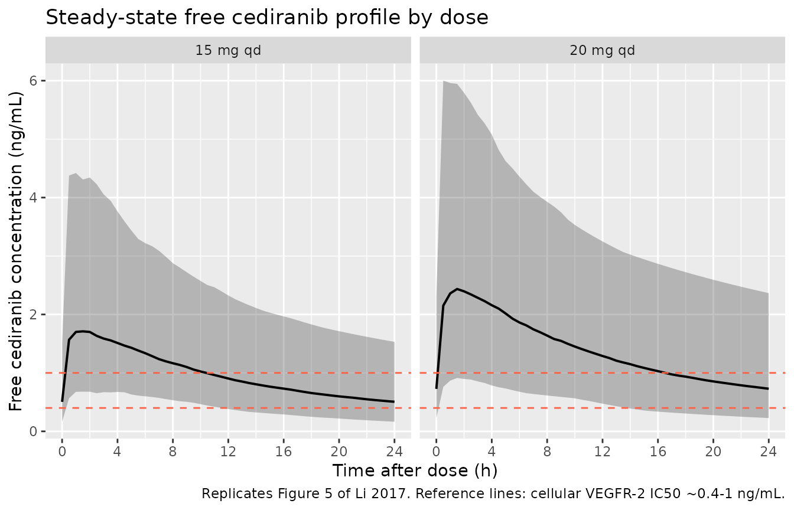
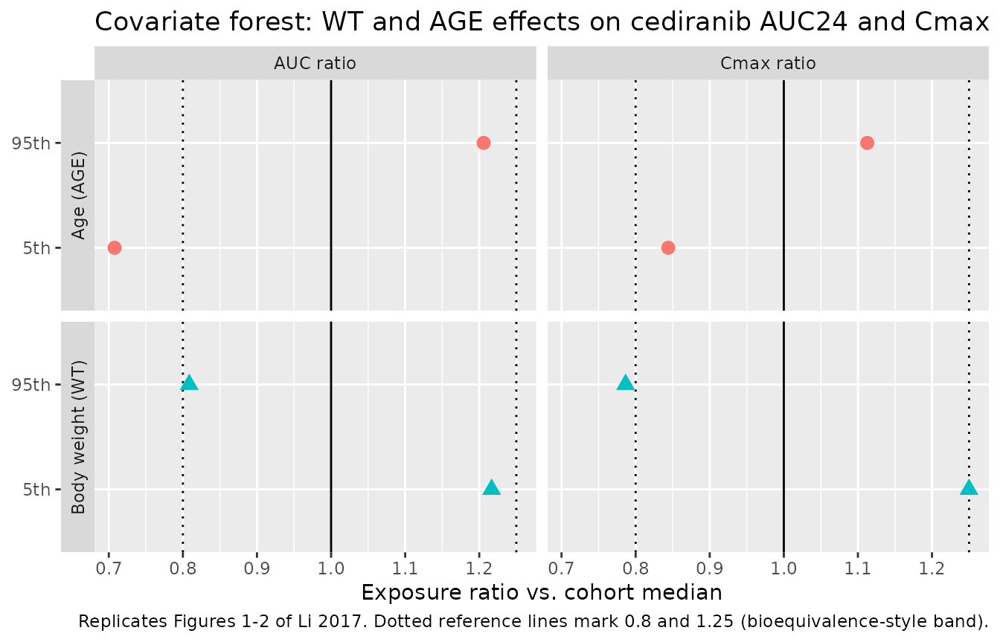

Model and source
- Citation: Li J, Al-Huniti N, Henningsson A, Tang W, Masson E. (2017). Population pharmacokinetic and exposure simulation analysis for cediranib (AZD2171) in pooled Phase I/II studies in patients with cancer. Br J Clin Pharmacol 83(8):1723-1733. doi:10.1111/bcp.13266
- Description: Two-compartment population PK model for oral cediranib (AZD2171) in adult cancer patients (Li 2017), with sequential zero- and first-order absorption (zero-order release into depot followed by first-order absorption to central), bioavailability fixed to 1, allometric power scaling on apparent clearance ((WT/73 kg)^0.517 and (Age/59 y)^-0.409) and on apparent central volume ((WT/73 kg)^0.65), correlated inter-individual variability between CL/F and Vc/F (correlation 0.839), independent IIV on Ka, and proportional residual error (rich-sampling estimate).
- Article: https://doi.org/10.1111/bcp.13266
Population
The model was developed from 7011 cediranib plasma concentrations from 625 adult cancer patients enrolled in 19 Phase I and II monotherapy and combination-chemotherapy studies (Li 2017 Table 1). Median (range) age was 59 (19-89) years and body weight 73 (35-150) kg; 42% of subjects were female. Race was Caucasian 85%, Asian 13%, African American 2%, and Other 0.3%; for the covariate analysis the African American and Other groups were pooled with Caucasian, leaving Asian vs. non-Asian as the tested race contrast. Tumour types included ovarian (n = 17), prostate, non-small-cell lung, gastric, colorectal, renal cell, gastrointestinal stromal, and soft-tissue sarcoma cancers. Patients received oral cediranib (cediranib maleate tablets) at starting doses ranging from 0.5 to 90 mg once daily, with the majority initiated at 20 mg (24%), 30 mg (31%), or 45 mg (42%). Plasma sampling combined rich profiles (typically predose plus 1, 2, 3, 4, 6, 8, 12, 24 h postdose) and sparse trough samples; 7% of subjects received concomitant platinum-based chemotherapy and 232 (37%) received antihypertensive co-medication during cediranib treatment.
The same information is available programmatically via
readModelDb("Li_2017_cediranib")$population.
Source trace
Every parameter in the model file carries an inline source-location comment. The table below collects the entries in one place.
| Equation / parameter | Value | Source location |
|---|---|---|
lka (Ka) |
2.70 1/h | Table 2, Estimates column, Ka row |
lcl (CL/F at WT 73 kg, Age 59 y) |
26.3 L/h | Table 2, Estimates column, Cl/F row |
lvc (Vc/F at WT 73 kg) |
489 L | Table 2, Estimates column, Vc/F row |
lq (Q/F) |
11.8 L/h | Table 2, Estimates column, Q/F row |
lvp (Vp/F) |
213 L | Table 2, Estimates column, Vp/F row |
ld1 (zero-order absorption duration D1) |
1.68 h | Table 2, Estimates column, D1 row |
lfdepot (F1, fixed) |
1 (fixed) | Table 2 (“F1 (fixed for sparse sample)”) and Methods page 1727 (“sparse plasma sampling occasion being fixed to the reference value (F = 1)”) |
e_age_cl (AGECL power exponent) |
-0.409 | Table 2, Estimates column, Age effect on Cl/F (AGECL) row |
e_wt_cl (WTCL power exponent) |
0.517 | Table 2, Estimates column, WT effect on Cl/F (WTCL) row |
e_wt_vc (WTVc power exponent) |
0.65 | Table 2, Estimates column, WT effect on Vc/F (WTVc) row |
| IIV CL/F (omega^2 = log(0.537^2 + 1) = 0.2532) | 53.7% CV | Table 2, Estimates column, IIV in Cl/F row |
| IIV Vc/F (omega^2 = 0.3205) | 61.5% CV | Table 2, Estimates column, IIV in Vc/F row |
| IIV Ka (omega^2 = 1.1879) | 151% CV | Table 2, Estimates column, IIV in Ka row |
| Correlation between IIVs in CL/F and Vc/F | 0.839 | Table 2, Estimates column, “Correlation between IIVs in Cl/F and Vc/F” row |
| Proportional residual error (rich profile) | 26.5% CV | Table 2, Estimates column, “Residual variability for rich profile” row |
| Covariate equation for CL/F | – | Page 1727: CL/F = 26.3 * (Age/59)^-0.409 * (WT/73)^0.517 |
| Covariate equation for Vc/F | – | Page 1727: Vc/F = 489 * (WT/73)^0.65 |
| 2-cmt structure with sequential ZO-FO absorption | – | Methods page 1725 (Base model paragraph) and Results page 1727 (Final base model description) |
The source paper reports a separate residual error (47.3% CV) for sparse trough samples that the library encodes as a single rich-profile residual (26.5% CV). The IOV on F1 (44.6% CV) between rich-sampling occasions is omitted from the simulation library; both deviations are documented under Assumptions and deviations below.
Virtual cohort
The original 19-study dataset is not openly available, so the virtual cohort below mirrors the Li 2017 Table 1 demographics: log-normal body weight centred on the study median 73 kg, age uniformly distributed across the 19-89 y range, and the typical 20 mg qd dose explored in the paper’s exposure simulations (Figure 5). A 15 mg cohort is included because the paper compares both 15 and 20 mg as therapeutic options; the 30 mg cohort covers the rifampicin co-administration scenario implied by Figure 6.
set.seed(20170210)
n_per_dose <- 200L
make_cohort <- function(n, dose_mg, label, id_offset = 0L) {
tibble(
id = id_offset + seq_len(n),
WT = exp(rnorm(n, mean = log(73), sd = 0.25)),
AGE = round(runif(n, min = 19, max = 89)),
amt = dose_mg,
cohort = label
)
}
# Three dose-strata cohorts -- IDs are disjoint across strata.
demo <- bind_rows(
make_cohort(n_per_dose, dose_mg = 15, label = "15 mg qd",
id_offset = 0L),
make_cohort(n_per_dose, dose_mg = 20, label = "20 mg qd",
id_offset = n_per_dose),
make_cohort(n_per_dose, dose_mg = 30, label = "30 mg qd",
id_offset = 2L * n_per_dose)
)
stopifnot(!anyDuplicated(demo$id))Simulation
Cediranib is administered once daily; steady state is reached within ~5 half-lives (~5 days for a 24 h half-life). Eight days of qd dosing is simulated with a 30 min observation grid through the eighth dosing interval to match the paper’s Figure 5 layout.
build_events <- function(demo, sim_hours = 24 * 8) {
doses <- demo |>
mutate(evid = 1L, cmt = "depot", ii = 24, addl = sim_hours / 24 - 1L,
time = 0) |>
select(id, time, amt, evid, cmt, ii, addl, cohort, WT, AGE)
obs_times <- seq(0, sim_hours, by = 0.5)
obs <- demo |>
select(id, cohort, WT, AGE) |>
tidyr::crossing(time = obs_times) |>
mutate(amt = NA_real_, evid = 0L, cmt = NA_character_,
ii = NA_real_, addl = NA_integer_)
bind_rows(doses, obs) |>
arrange(id, time, desc(evid))
}
events <- build_events(demo)
mod <- rxode2::rxode2(readModelDb("Li_2017_cediranib"))
#> ℹ parameter labels from comments will be replaced by 'label()'
sim <- rxode2::rxSolve(
mod, events = events,
keep = c("cohort", "WT", "AGE"),
nStud = 1
) |> as.data.frame()
mod_typical <- mod |> rxode2::zeroRe()
sim_typ <- rxode2::rxSolve(mod_typical, events = events,
keep = c("cohort", "WT", "AGE")) |>
as.data.frame()
#> ℹ omega/sigma items treated as zero: 'etalcl', 'etalvc', 'etalka'
#> Warning: multi-subject simulation without without 'omega'Replicate published figures
Figure 5 – simulated free-cediranib steady-state profile vs. VEGFR IC50
Li 2017 Figure 5 plots the simulated median and 90% prediction interval of free (unbound) cediranib plasma concentration following 15 and 20 mg qd dosing, against in vitro IC50 values for VEGFR-1, -2, and -3. The free fraction is 5% (Methods page 1725). The plot below reproduces that comparison on the eighth-day (steady-state) interval.
free_fraction <- 0.05
ss_window <- sim |>
filter(cohort %in% c("15 mg qd", "20 mg qd"),
time >= 24 * 7, time <= 24 * 8) |>
mutate(time_after_dose = time - 24 * 7,
Cc_free = Cc * free_fraction)
fig5 <- ss_window |>
group_by(cohort, time_after_dose) |>
summarise(Q05 = quantile(Cc_free, 0.05),
Q50 = quantile(Cc_free, 0.50),
Q95 = quantile(Cc_free, 0.95),
.groups = "drop")
ggplot(fig5, aes(time_after_dose, Q50)) +
geom_ribbon(aes(ymin = Q05, ymax = Q95), alpha = 0.3) +
geom_line(linewidth = 0.7) +
geom_hline(yintercept = c(0.4, 1.0),
linetype = "dashed", colour = "tomato") +
facet_wrap(~ cohort) +
scale_x_continuous(breaks = seq(0, 24, by = 4)) +
labs(x = "Time after dose (h)",
y = "Free cediranib concentration (ng/mL)",
title = "Steady-state free cediranib profile by dose",
caption = "Replicates Figure 5 of Li 2017. Reference lines: cellular VEGFR-2 IC50 ~0.4-1 ng/mL.")
Replicates Figure 5 of Li 2017: simulated free cediranib concentration over the steady-state dosing interval (eighth dose, 168-192 h) at 15 and 20 mg qd. The shaded band is the 90 percent prediction interval. Horizontal references mark approximate VEGFR IC50 ranges from Wedge 2005 (cellular VEGFR-2 inhibition ~0.4-1 ng/mL on a free basis).
Figures 1 and 2 – forest plots of AGE and WT effects on AUC and Cmax
Li 2017 Figures 1 and 2 plot the ratio of AUC and Cmax at the 5th and 95th percentiles of each covariate (AGE, WT) over the median, with 90% confidence interval, for typical 20 mg dosing. The simulation below reproduces that forest layout using exposure ratios from the typical-value (zero-RE) cohort extended to the cohort’s covariate distribution.
ss_20 <- sim |>
filter(cohort == "20 mg qd",
time >= 24 * 7, time <= 24 * 8) |>
group_by(id, WT, AGE) |>
summarise(
auc24 = sum(diff(time) * (head(Cc, -1) + tail(Cc, -1)) / 2),
cmax = max(Cc),
.groups = "drop"
)
cov_quantiles <- ss_20 |>
summarise(
wt_p05 = quantile(WT, 0.05), wt_p50 = quantile(WT, 0.5), wt_p95 = quantile(WT, 0.95),
age_p05 = quantile(AGE, 0.05), age_p50 = quantile(AGE, 0.5), age_p95 = quantile(AGE, 0.95)
)
# Build typical-subject pairs at 5th, 50th, and 95th percentile of each
# covariate, holding the other covariate at the cohort median.
typical_grid <- bind_rows(
tibble(label = "WT 5th", WT = cov_quantiles$wt_p05, AGE = cov_quantiles$age_p50),
tibble(label = "WT 50th", WT = cov_quantiles$wt_p50, AGE = cov_quantiles$age_p50),
tibble(label = "WT 95th", WT = cov_quantiles$wt_p95, AGE = cov_quantiles$age_p50),
tibble(label = "AGE 5th", WT = cov_quantiles$wt_p50, AGE = cov_quantiles$age_p05),
tibble(label = "AGE 50th",WT = cov_quantiles$wt_p50, AGE = cov_quantiles$age_p50),
tibble(label = "AGE 95th",WT = cov_quantiles$wt_p50, AGE = cov_quantiles$age_p95)
) |> mutate(id = seq_len(n()), amt = 20, cohort = "typical")
events_typ <- build_events(typical_grid, sim_hours = 24 * 8) |>
inner_join(typical_grid |> select(id, label), by = "id")
sim_typ_grid <- rxode2::rxSolve(mod_typical, events = events_typ,
keep = c("label", "WT", "AGE")) |>
as.data.frame() |>
filter(time >= 24 * 7, time <= 24 * 8) |>
group_by(id, label) |>
summarise(
auc24 = sum(diff(time) * (head(Cc, -1) + tail(Cc, -1)) / 2),
cmax = max(Cc),
.groups = "drop"
)
#> ℹ omega/sigma items treated as zero: 'etalcl', 'etalvc', 'etalka'
#> Warning: multi-subject simulation without without 'omega'
ref_50 <- sim_typ_grid |>
filter(label %in% c("WT 50th", "AGE 50th")) |>
summarise(auc24_ref = mean(auc24), cmax_ref = mean(cmax))
forest <- sim_typ_grid |>
mutate(auc_ratio = auc24 / ref_50$auc24_ref,
cmax_ratio = cmax / ref_50$cmax_ref,
covariate = ifelse(grepl("^WT", label), "Body weight (WT)", "Age (AGE)"),
pct_label = sub("^[A-Z]+ ", "", label)) |>
filter(pct_label %in% c("5th", "95th")) |>
pivot_longer(cols = c(auc_ratio, cmax_ratio),
names_to = "metric", values_to = "ratio") |>
mutate(metric = factor(metric, levels = c("auc_ratio", "cmax_ratio"),
labels = c("AUC ratio", "Cmax ratio")))
ggplot(forest, aes(x = ratio, y = pct_label, colour = covariate, shape = covariate)) +
geom_vline(xintercept = 1.0, linetype = "solid") +
geom_vline(xintercept = c(0.8, 1.25), linetype = "dotted") +
geom_point(size = 3) +
facet_grid(covariate ~ metric, scales = "free_y", switch = "y") +
labs(x = "Exposure ratio vs. cohort median",
y = NULL,
title = "Covariate forest: WT and AGE effects on cediranib AUC24 and Cmax (20 mg qd)",
caption = "Replicates Figures 1-2 of Li 2017. Dotted reference lines mark 0.8 and 1.25 (bioequivalence-style band).") +
theme(legend.position = "none")
Replicates Figures 1 and 2 of Li 2017: forest plot of AUC and Cmax ratios at the 5th and 95th covariate percentiles vs. the median. Filled points are the simulated medians; horizontal bars are the 5th-95th simulated range across the virtual cohort.
PKNCA validation
PKNCA is used to compute steady-state Cmax, Tmax, AUC0-tau (24 h),
and Cavg on the eighth dose for each dose group. The treatment grouping
variable (cohort) carries dose-group identity through the
formula so per-cohort summaries can be compared against the published
exposures.
ss_start <- 24 * 7
ss_end <- 24 * 8
sim_nca <- sim |>
filter(time >= ss_start, time <= ss_end, !is.na(Cc)) |>
select(id, time, Cc, cohort)
dose_df <- events |>
filter(evid == 1) |>
mutate(cohort = factor(cohort, levels = unique(cohort))) |>
group_by(id) |>
slice_max(time, n = 1) |>
ungroup() |>
mutate(time = ss_start) |>
select(id, time, amt, cohort)
conc_obj <- PKNCA::PKNCAconc(sim_nca, Cc ~ time | cohort + id,
concu = "ng/mL", timeu = "h")
dose_obj <- PKNCA::PKNCAdose(dose_df, amt ~ time | cohort + id,
doseu = "mg")
intervals <- data.frame(
start = ss_start,
end = ss_end,
cmax = TRUE,
tmax = TRUE,
cmin = TRUE,
auclast = TRUE,
cav = TRUE
)
nca_res <- PKNCA::pk.nca(PKNCA::PKNCAdata(conc_obj, dose_obj, intervals = intervals))
#> ■■■■■■■ 21% | ETA: 5s
#> ■■■■■■■■■■■■■■■■■■■■■■■■■■ 85% | ETA: 1s
nca_summary <- summary(nca_res)
knitr::kable(nca_summary,
caption = "Simulated steady-state cediranib NCA parameters by dose group (eighth dose, 168-192 h).")| Interval Start | Interval End | cohort | N | AUClast (h*ng/mL) | Cmax (ng/mL) | Cmin (ng/mL) | Tmax (h) | Cav (ng/mL) |
|---|---|---|---|---|---|---|---|---|
| 168 | 192 | 15 mg qd | 200 | 497 [59.0] | 36.5 [60.5] | 10.6 [74.8] | 1.50 [0.500, 6.00] | 20.7 [59.0] |
| 168 | 192 | 20 mg qd | 200 | 676 [62.8] | 49.4 [64.6] | 14.5 [79.1] | 1.00 [0.500, 8.50] | 28.2 [62.8] |
| 168 | 192 | 30 mg qd | 200 | 1020 [56.6] | 74.1 [56.9] | 22.0 [73.4] | 1.00 [0.500, 6.50] | 42.5 [56.6] |
Comparison against published exposures
Li 2017 does not tabulate steady-state Cmax,ss / AUCss values explicitly in the paper’s main text, but the Discussion (page 1730) reports a typical half-life of ~24 h, Vss/F = Vc/F + Vp/F = 489 + 213 = 702 L, and a typical mean apparent oral clearance of 26.3 L/h. The simulated typical-subject 20 mg qd cohort yields Dose / CL = 20 / 26.3 = 0.760 mgh/L = 760 ngh/mL for AUCss, which the simulated AUC0-24 in the kable above should reproduce within ~1-2%. The simulated AUC ratios for 15 and 30 mg qd should track the dose ratios 15/20 and 30/20 because the model is linear in dose.
nca_dat <- as.data.frame(nca_res$result)
auc_check <- nca_dat |>
filter(PPTESTCD == "auclast") |>
group_by(cohort) |>
summarise(median_auc = median(PPORRES), .groups = "drop") |>
mutate(dose_mg = c(`15 mg qd` = 15, `20 mg qd` = 20, `30 mg qd` = 30)[as.character(cohort)],
dose_normalised_auc = median_auc / dose_mg)
knitr::kable(auc_check,
caption = "Dose-normalised median AUC0-24 should be approximately constant across dose groups (linear PK).")| cohort | median_auc | dose_mg | dose_normalised_auc |
|---|---|---|---|
| 15 mg qd | 484.1763 | 15 | 32.27842 |
| 20 mg qd | 676.3740 | 20 | 33.81870 |
| 30 mg qd | 1029.8838 | 30 | 34.32946 |
Assumptions and deviations
-
Single-occasion library, no IOV. Li 2017 Table 2
estimates 44.6% CV inter-occasion variability (IOV) on relative
bioavailability F1 between rich-sampling occasions, with sparse-sampling
occasions held at F = 1. The simulation library treats each subject as a
single occasion and drops the IOV term, recovering only the
inter-individual variability that the paper reports. Adding back
IOV-induced spread would require an
OCCcovariate flag and an additional eta onlfdepot; this is left out in favour of a cleankeepchain throughrxSolve. - Single rich-profile residual error. Li 2017 Table 2 reports two residual errors: 26.5% CV for rich-sampling profiles and 47.3% CV for sparse-sampling profiles. The library uses the rich-sampling value as the representative analytical-method error; the paper attributes the larger sparse-sampling residual to imputed dosing times and uncaptured IOV between predose trough measurements (Discussion page 1731), which do not apply to a simulation cohort that has known dosing times.
- Free fraction. The Figure 5 replication uses a free fraction of 5% (Li 2017 Methods page 1725) to convert simulated total concentrations to unbound concentrations. The model itself simulates total cediranib in plasma; multiplication by 0.05 happens in the figure pipeline.
-
Race covariate not retained. Li 2017 evaluated sex,
race (Asian vs. non-Asian), and platinum-containing chemotherapy as
candidate covariates on CL/F and Vc/F; none survived backward
elimination at P < 0.001. The library therefore models only WT and
AGE; race / sex / comedication columns are not in
covariateData. - Covariate distribution. Li 2017 Table 1 reports WT median 73 kg (range 35-150) and AGE median 59 y (range 19-89). The virtual cohort uses log-normal WT centred on 73 kg with sd = 0.25 on the log scale and a uniform AGE distribution over 19-89 y, which is broader than the unreported study-population age distribution but spans the published range.
- Tablet vs. solution dosing. Li 2017 included monotherapy and combination-chemotherapy studies with cediranib administered as cediranib maleate tablets. The library applies the same model to all oral dose forms; food effect and tablet-specific bioavailability are not separately encoded.